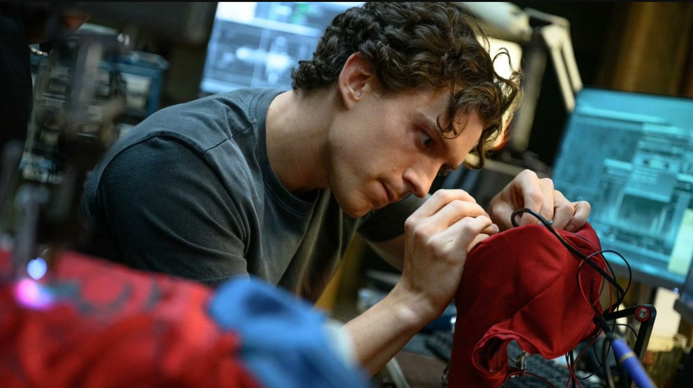

When Sony and Marvel Studios sent Spider-Man: Brand New Day into theaters on July 31, 2026, the industry was braced for a strong result but not for what followed. Following the multiverse-shattering spectacle of 2021's No Way Home, fans and analysts alike wondered how the studios could top a film that had brought together three generations of Spider-Men. The answer turned out to be a smaller, more personal story that became the highest-grossing film of the year and one of the most successful releases in cinema history. This article discusses plot elements of the film.
A record-setting weekend
Directed by Destin Daniel Cretton and starring Tom Holland as Peter Parker, the film opened to a figure that few had predicted. Pre-release tracking had pointed to roughly $260 million to $280 million in North America, and Sony's own estimate was closer to $195 million. Instead, the film earned about $169.8 million on its opening day, including a record $72 million from Wednesday and Thursday previews, and finished the weekend with an estimated $355 million that was later revised upward to $360.1 million.
That final number made it the biggest domestic opening weekend of all time, passing the $357.1 million set by Avengers: Endgame in 2019. Early reports had placed it just behind that film, so the revision was a notable twist. Worldwide, the picture opened to $932 million, second only to Endgame's $1.2 billion, with more than $570 million coming from international markets. China alone contributed about $121 million in its opening frame, a remarkable total for a Hollywood release, while the United Kingdom added roughly $49 million and Mexico about $38 million.
The climb to $2 billion and beyond
The momentum did not fade. The film crossed $1 billion worldwide in just six days, the second-fastest pace in history behind Endgame, and it reached $2.022 billion after only 17 days in theaters, again trailing only that film, which needed 11 days. In doing so it became the first Spider-Man movie, and the first non-Avengers superhero film, to enter the $2 billion club. The group also includes Avatar, Avatar: The Way of Water, Titanic, Ne Zha 2, Star Wars: The Force Awakens, Avengers: Infinity War and Endgame.
Its run continued well past that milestone. By the end of August the film had grossed about $2.33 billion worldwide, including roughly $892 million in the United States and Canada, and it kept climbing through September to settle near $2.5 billion. That places it third on the all-time worldwide list, behind Avatar and Endgame. By the end of August its biggest overseas markets were China at about $227 million, the United Kingdom at about $125 million, Mexico at $88 million, France at nearly $82 million and Brazil at $70 million, and it became the highest-grossing Hollywood release in India.
The film's budget was reported at around $225 million, which means it cleared its production costs many times over.
A smaller, more human Spider-Man
The numbers might suggest a bigger-is-better formula, but the film succeeded in part by going the other way. Set four years after the spell that erased Peter from the world's memory at the end of No Way Home, the story finds him living alone and quietly protecting New York as an anonymous hero. Marvel Studios president Kevin Feige described the goal as giving audiences a "proper" Spider-Man for the first time, fighting street-level crime rather than world-ending threats.
Peter's overwork and isolation trigger changes in his powers, including organic webs and heightened senses, which sends him to Bruce Banner, played by Mark Ruffalo, for help. Along the way he crosses paths with Jon Bernthal's Punisher and Florence Pugh's Yelena Belova, and the central threat turns out to be Jean Grey, a young telepath played by Sadie Sink who is searching for her missing sister. The choice of a lonely teenager as the antagonist mirrors Peter's own situation, and Cretton has said it helped him define the film's central ideas. Zendaya returns as MJ and Jacob Batalon as Ned, now living lives in which neither remembers who Spider-Man really is.
The production leaned on practical stunt work and location filming, with scenes shot in Glasgow, which stood in for parts of New York, and on soundstages at Pinewood Studios in England. Michael Giacchino returned to compose the score. The result was a film that critics and audiences alike read as a shift toward a more mature character study, despite the presence of several MCU heavyweights.
What the critics said
The critical reception was positive but not unanimous. On Rotten Tomatoes about 89 percent of reviews were favorable, while Metacritic's weighted average landed at 66, which signals generally favorable rather than rapturous notices. Reviewers praised Holland's performance, the action sequences and the emotional focus on Peter, with one major trade critic calling it a dark and thrilling new chapter. Others were less convinced, arguing that the film runs long, leans too heavily on setup for the wider Marvel universe, or lets its supporting cast overshadow its hero. Audiences were warmer, awarding it an "A" from CinemaScore.

Why the story struck a chord
Studio executives pointed to a mix of scarcity and character connection. Sony chief Tom Rothman told The Hollywood Reporter that there had not been a Spider-Man film in five years, so scarcity carried real value, and that the audience remains deeply connected to a character whose story feels relatable. Producer Amy Pascal echoed that sentiment, framing the result as proof that audiences crave stories that feel both spectacular and human.
Marketing also played a large part. The first trailer, released in March, drew a reported 718.6 million views in 24 hours, a record, and the campaign involved 165 brand partners and a fan experience in Brooklyn that recreated Peter's apartment. Advance ticket sales reached a record $150 million, and the film's social media reach topped the previous record held by Endgame. Hype alone does not account for a run of this length, though. The film stayed at No. 1 in North America for six consecutive weekends, which points to strong word of mouth.
Tom Holland's career year
For Holland, the result capped an extraordinary summer. Thomas Stanley Holland was born on June 1, 1996, in Kingston upon Thames, just outside London, the oldest of four boys in a family that ran on humor and creativity. His father, Dominic Holland, is a stand-up comedian, and his mother, Nicola, is a photographer. He did not set out to become an actor. He started dance classes around age nine, mostly for fun, and a choreographer pushed him to audition for Billy Elliot the Musical in London's West End. He trained for two years and eventually landed the title role, playing Billy from 2008 to 2010.
Sixteen years later, he stands atop a different kind of list. With Brand New Day and Christopher Nolan's The Odyssey, which has itself grossed well over $1.6 billion, both playing in the same summer, Holland's cumulative worldwide box office passed $15.5 billion in September. That total edged him past Zoe Saldaña, who had held the record at roughly $15.47 billion after Avatar: Fire and Ash, and made him the highest-grossing actor in film history at age 30. The milestone rests on both of his 2026 releases and on his long run in the Marvel films, and it is based on tallies from box office trackers rather than an official ranking.
What it means for Hollywood
Beyond Sony and Marvel's own fortunes, the film's run has been read as a broader signal for theaters. The U.S. summer box office from May through early September finished at $4.76 billion, an all-time record according to industry reporting, and overall ticket sales for 2026 were running well ahead of the previous year. Brand New Day and The Odyssey drove much of that growth, giving exhibitors evidence that large, event-style releases still bring audiences out in the streaming era.
The film also reshaped the Marvel schedule. Set before Avengers: Doomsday, which was delayed to December 18, it stands on its own, and its post-credits scene hints at a future story involving a Spider-Man sighting away from Earth. Feige has said Miles Morales will arrive in live action after the animated Beyond the Spider-Verse reaches theaters in 2027, and Pascal's plans reportedly extend to several more Spider-Man films. For now, there have been no concrete talks about Holland returning for a fifth film, and Feige said he and Zendaya would take a break before new plans are confirmed.
That uncertainty is part of what makes the result feel complete. By returning to street-level heroics and emotional authenticity, Brand New Day showed that blockbusters do not always need universe-ending stakes to make history. Sometimes a good story about sacrifice and resilience is the most powerful force in cinema.